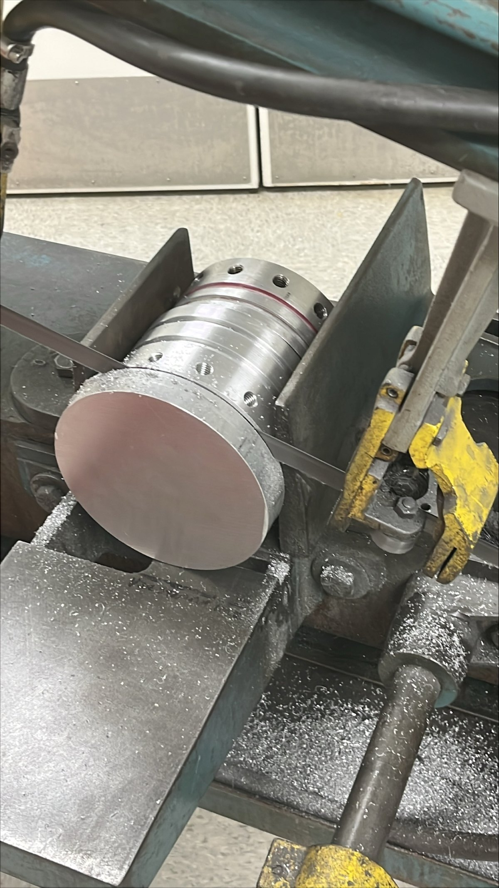
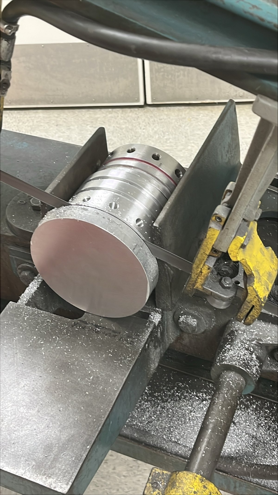

24-25 PROPULSION
O-CLASS SOLID ROCKET MOTOR FOR 30K FLIGHT
The 2024–2025 school year marked my first year with Duke AERO's solid propulsion subteam. As a freshman, this gave me the invaluable opportunity early on to get hands-on, learn, and refine my manufacturing techniques. This work culminated in a successful static fire test and a nominal motor burn at IREC 2025.
This project page is not a complete account of all projects we did, but aims to showcase projects that I worked directly on and contributed significantly to.
Manufacturing
HYDROSTATIC CLOSURE
This is a 5.5" diamater hydrostatic closure, machined down from a 5.75" OD solid block of 6061 Aluminum. This closure is used for the hydrostatic test of the motorcase, where we pressurized the motorcase up to ~1375 psi, which is over 2.5x the expected chamber pressure.
The most time-consuming operations in manufacturing this part were getting the piece down to diameter and facing the ends, which took about 3-4 hours on the lathe. The O-ring grooves were cut using a parting tool, and the radial bolt holes were drilled and tapped for 1/2"-13 bolts using the 4th axis on a mill. There is a central through hole to pressurize the motorcase, which is tapped with 1/4" NPT thread.
TEST CLOSURE
Arguably the most machine-intensive part of all 3 closures, this 5.5" OD closure was designed to mount a pressure transducer and transfer load to a load cell for both our hydrostatic test and static fire test.
The general manufacturing process was similar to the other closures, with O-ring grooves and radial holes. The significant difference is the closure head, where a lot of material had to be removed on the lathe down to the head diameter, then the necking was done using multiple passes with a parting tool. The final finishing touch was a deep blind hole down the center for the pressure tap, and a radial NPT tapped hole for the pressure transducer.
FLIGHT CLOSURE
Last but certainly not least, this is the flight closure which is used for the launch at IREC. It is similar to the hydrostatic closure but instead of a through central hole, it has a blind hole, tapped for a 1/4" eye-bolt for extraction of the closure from the case.
Due to the sheer size of these closures, we inevitably have to flip them to machine the other side on the lathe, which requires a lot of careful indication to ensure concentricity. This is of course room for error, which I learned the hard way when I took off 15 thou too much after flipping the part. Fortunately, this was not a critical dimension, as the O-ring groove could be adjusted to account for this.
NOZZLE CARRIER
This nozzle carrier is used to retain the graphite nozzle in the motor. The O-ring grooves and radial holes are similar to the closures. The center bore is drilled out using increasing drill bits to 2.5" then bored with a boring bar. The bevel is then machined with the compound slide.
The story behind this part is too long to be included here, but in short, this whole piece was designed and machined all in the span of 5 days. Machining this was a wild ride - 3 of us taking shifts, 8 hours a day in the machine shop in the middle of midterm season, and we managed to finish the part in just over 2 days.
(For context, all the other closures were finished over the course of 2-3 weeks over the weekends)
PROPELLANT GRAINS
This was our second year developing our SRAD APCP formula, and the first time for a 30k flight. The motor has 4 stepped ID grains to prevent erosive burning, and the grains are all mixed and cast from raw ingredients by the propulsion team. The motor is reloadable, so we casted 8 grains in total, with 4 for the static fire and 4 for the flight.
The photo shows our casting setup. We use a KitchenAid to help mix the propellant. Two packed grains in mandrels covered in saran wrap are visible in the foreground.
TEST STAND
The test stand is used to hold the motor during the static fire. It is designed to withstand the forces generated during the tests, and includes a load cell to measure thrust.
The frame of the stand is constructed out of 80/20 1515 Aluminum extrusion and designed by me, using Onshape's Frame feature. The stand is designed to be modular for transport and adaptable to different motor sizes up to 7.5" OD. The wide legs prevent tipping over and can be weighed down with sandbags. We also included bolts where the stand can be staked down to the ground with steel cables.
Static Fire
Team @ Bayboro test site
Field repair!
After months of design, machining, and assembly, we finally had a full motor. Now we had one week until the deadline to perform a test fire at the Bayboro, NC test site.
This is make or break. A failed test fire would leave us with no time to remake the motor, and we would not be able to launch at IREC. We had to make sure everything was perfect.
However, not everything was smooth sailing. During setup, our LabView DAQ hardware overheated and could not be powered on. Without test burn data, we would not pass safety checks and not allowed to launch. After some quick troubleshooting, I was able to trace the issue to a faulty power supply, and luckily we brought a DC bench power supply, which we used to bypass the onboard PSU with some VERY makeshift wiring and handywork. We did not have the right connectors, so I had to bend the wires into a tiny loop to fit onto the terminals, and secured everything with masking tape. It was not pretty, but it worked.
After all the hard work, the test fire was a success. The motor performed nominally, and we got all the data we needed, and were good for launch at IREC.
Scroll to top for static fire footageMe with the motor!
Beautiful blue flame
IREC 2025
The IREC 2025 launch was the culmination of our effort. The motor burn was nominal and the rocket demonstrated good off-the-rail stability. However, a structural event as the rocket approached max q led to loss of the fins and causing overall vehicle breakup. The motor kept burning and landed ballistically. Despite this, we recovered all components, and the team is incredibly proud of the work that went into this vehicle - from design to launch.
 
